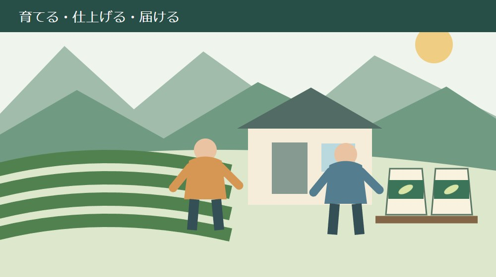
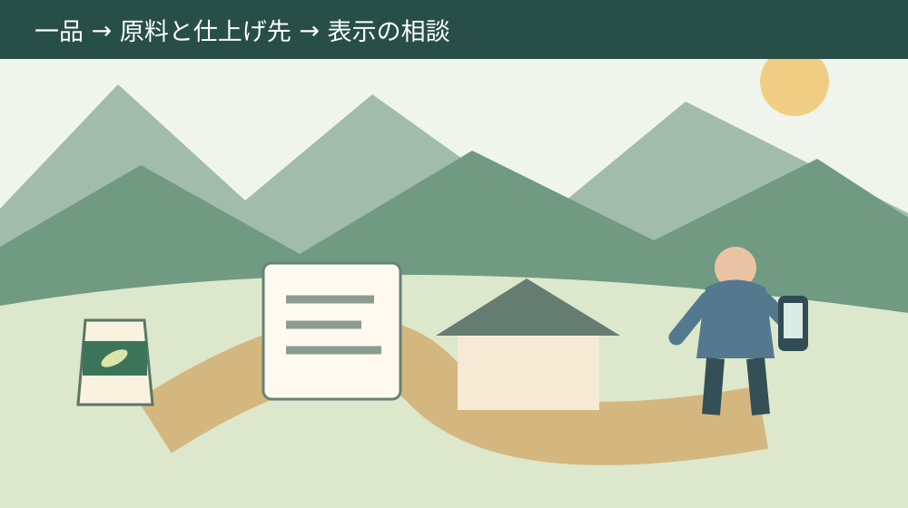

静岡茶の新ブランド条件｜森町の茶をどう伝える
／ 農地・山林・茶畑

Q. 森町で売っているお茶なら、新ブランドを名乗れるの？
静岡県が示した新ブランドの定義は、静岡県産一番茶100％使用と静岡県内仕上げ加工100％です。森町での販売だけでは判断できません。自店商品の原料と仕上げ先を確認し、個別商品の適合やロゴの使用手続きは県の担当へ照会します。
茶畑と店頭の間にある仕事を、説明から落とさない
森町で茶を育て、仕上げ、売るまでには、それぞれ違う仕事があります。畑を維持する人、原料を見て仕上げる人、味を伝える人。新しい名前が発表されたからといって、担い手が積み重ねてきた仕事が始まるわけではありません。すでにある努力を、買う人にどう伝えるかという話です。
この記事は、森町で茶を生産・販売する方が、自店の商品と新ブランドとの関係を整理するためのものです。2026年9月17日に県と町の公式資料を確認しました。個別商品の認定一覧を紹介する記事ではなく、手元の一品で確かめる順番を扱います。
私は大石浩之（磐田市／不動産業）です。茶の製造者でも審査担当でもありません。ここでは、仕事を引き継ぐ人にも説明できる段取りという立場から考えます。確認できた公的事実と、私が勧める店内の整理方法は、段落を分けて書きます。
県の名前と店の名前が並ぶほど、お客さんからの質問も具体的になります。「これは新ブランドのお茶か」と聞かれたとき、担当者一人の記憶に頼らず答えられるか。販売説明を増やす前に、原料と仕上げ先の確認を一品だけ済ませることを、今日の仕事にします。
事実整理｜二つの100％は、別の条件を指している
静岡県の発表会報告では、新ブランドの名称をJAPAN TEA SHIZUOKAとしています。発表会は2026年4月14日。県公式ページの更新日は6月1日です。発表された日と記事の更新日を分けておくと、取引先から受け取った資料の新旧を照合できます。
同報告の第2節で示された定義は、「静岡県産一番茶100％使用＆静岡県内仕上げ加工100％」です。原料がどこで採れたどの茶かという条件と、仕上げ加工をどこで行うかという条件を組み合わせています。販売場所だけを示した条件ではありません。
県産であることだけを確かめても、一番茶かどうかが空欄なら確認は途中です。一番茶と聞いても、静岡県産か分からなければ同じです。店内の整理では「産地」「茶期」「仕上げ場所」を別欄にすると、聞き漏らした内容が見えます。これは私の整理案で、県の指定様式ではありません。
意外に見落としやすいのは、畑だけで条件が終わらないことです。県は原料と仕上げ加工の両方を定義に置いています。森町産の原料であっても、その言葉だけで仕上げ場所までは分かりません。原料の説明を、商品の全工程の説明へ広げすぎないことです。
県の第3節にある2026年度の情報発信や商品展開は、発表時点の予定として読みます。9月17日までにすべて実施されたとは、この報告だけでは確かめられません。自店が参加できる企画や販売媒体があるかは、発表の予定と現在の募集を分けて照会します。
森町の茶を語る資料と、商品を証明する記録は違う
森町は『遠州森の茶業史』とダイジェスト版の刊行・販売を案内しています。町の2024年12月9日更新ページは、森の茶の歴史と文化を扱う資料だと説明しています。地域の歩みを調べる入口が、町の公式情報として残されているわけです。
茶の歴史は店頭で話す背景になります。しかし、歴史の本に森の茶が載っていることは、目の前の茶袋の原料や加工場所を証明しません。地域全体の物語と、商品ごとの確認記録を混ぜないほうが、長く続けてきた店の説明にも無理が出ません。
町の木である山茶花の選定理由にも、特産物の「茶」の字を用いることが挙げられています。森町公式「町の木、町の花、町の鳥」で確認できます。茶が商品の名前を超え、町の象徴にも結びついているという、小さくても具体的な事実です。
店の紹介文を作るなら、まず地域の背景を一文、次に自店の商品を一文と分けます。歴史部分の下調べは森の茶と町の歴史を扱った記事から確認できます。背景を知ることと、商品を確かめることを往復できる説明にしたいと私は考えます。
良い点｜生産と仕上げを、同じ説明の中に置ける
新ブランドの定義の良い点は、原料を育てる仕事と仕上げる仕事を同時に説明できることだと、私は考えます。畑の話だけでも、店の味づくりの話だけでも終わらない。買い手が茶袋の向こうの工程を尋ねる入口になります。
県内という共通の範囲があると、店員が交代したときにも確認すべき場所がそろいます。「いつもの仕入れだから大丈夫」という説明では、次の担当者は判断できません。産地と仕上げ先が書いてあれば、知らない人も何を聞き直すか分かります。
店頭で説明がそろうことは、小さな店にも意味があります。電話、売場、通販で違う言い方をしてしまうと、訂正の手間を同じ担い手が背負います。確認できた一文を共有しておけば、接客のたびに一から説明を作る負担を減らせるはずです。これは販売現場への私の提案です。
ただし、説明を整えるだけで売上が増えるとは言い切れません。価格、内容量、買う目的、届け方も関わるからです。茶を続けるための収支は森町の茶の価格と継続条件を考えた記事に分け、新ブランドに収支改善のすべてを背負わせないようにします。
注文したい点｜定義だけでは、店の表示まで決められない
県の発表会報告だけでは、自店のどの商品が適合するかは確認できません。ロゴを袋に印刷する手続きや、複数商品の売場での使い方も、この資料を根拠に判断できません。定義を読んだことと、使用方法を確認したことの間に、作業が残ります。
私が欲しいのは、小さな店でも商品一つを持って相談できる、具体的な確認の入口です。既に別の資料で案内されている可能性はありますが、今回の発表会報告では確認できていません。分からない部分を店員の判断で埋めず、担当へ聞く項目として残します。
「新ブランドに当てはまらないなら良くない茶なのか」という説明にも注意が要ります。発表された定義は、新ブランドの対象範囲を示すものです。別の茶期を使う商品や別の用途の茶まで、一列に良し悪しを決める資料ではありません。既存商品を下げる言葉には使わないことです。
ロゴの使用を急いで包装資材を発注すると、後から表示を直す費用が出るかもしれません。私はまず、印刷する前の原稿で相談する順を勧めます。大きな包装変更を決める前に、商品名と使用媒体だけをメモにしておけば、今日の確認は進められます。
私にも迷いがあります。新しい名前を前面に出すほうが伝わる店も、自店の名前を先に知ってもらうほうが伝わる店もあるでしょう。県の資料を読んだだけで、その優先順位までは決められません。だから最初は看板を変えず、手元の商品の説明を確かめます。

対案・結論｜今日は自店の一品を、三つの欄で確かめる
今日の小さな一歩は、売っている商品のうち一品を選び、原料の産地・茶期・仕上げ先を書き出すことです。全商品を一晩で調べる必要はありません。よく質問される商品など、担当者が選びやすい一品から、分かる欄と空欄を分けます。
最初に茶袋の正式な商品名と内容量を控えます。同じ屋号でも、容量違いや詰め合わせで中身が異なる場合を想定するためです。商品を写真で残すときは、表の名前だけでなく、裏の表示と手元の識別番号も一緒に記録します。顧客情報は写しません。
原料の欄では、仕入れ伝票、仕様書、取引先の回答など、店にある根拠を探します。「静岡県産」と「一番茶」の両方を何で確認したか書きます。書類にないことを、長年の付き合いから推測してチェック済みにしないことが、後の説明を楽にします。
仕上げ先は、店の所在地から推測せず、実際にその商品の仕上げを行う先へ確認します。どの工程を仕上げ加工に含めるか迷うときも、独自に境界を決めません。工程の呼び名をそのまま控え、県の定義との関係を担当へ聞ける形にします。
取引先に聞く文面は、「商品名○○について、原料の産地と茶期、仕上げ加工を行う場所を確認したい」と短くします。これは照会文の例です。新ブランドへの適合を取引先が保証するよう迫るのではなく、まずその相手が把握している事実を尋ねます。
回答がそろったら、県公式ページの問い合わせ先である静岡県お茶振興課お茶振興班へ、表示の扱いを照会します。掲載電話は054-221-2674です。商品、原料、仕上げ先、使いたい媒体を手元に置き、適用する規程や確認先を尋ねます。
店頭と通販で使う言葉を、一品ずつそろえる
販売説明は、確認した商品だけにひも付けて作るのが私の提案です。一品を調べた結果を、店内すべての茶へ広げないようにします。詰め合わせの場合も、箱全体について何が言えるかと、中の商品ごとの説明を分けて考えます。
まだ条件が確認できていない商品に質問が来たら、「原料と仕上げ先を確認中です」と答えられます。曖昧なまま肯定するより、返答予定と担当者を決めるほうが店の仕事として続きます。調べていること自体を、適合済みの意味で使わないようにします。
売場、電話、通販の商品説明は、同じ確認票から作ります。公開用の文章に仕入れ先との契約情報や内部の金額まで入れる必要はありません。裏付けの記録を店内に残し、買い手へ伝える範囲を分けることで、情報を守りながら説明をそろえられます。
次の仕入れで原料や仕上げ先が変わるなら、文章も確認し直します。商品名が同じでも、以前の回答が次の仕入れまで保証するとは限りません。変更があったかを取引先へ聞く役と、店頭表示を直す役を決めると、連絡だけ届いて表示が残る状態を避けられます。
家族と後継に残すのは、答えと確認先の組合せ
茶の販売を引き継ぐ記録には、説明文だけでなく、その根拠を聞ける相手も残します。担当者名、照会日、商品名、回答の保存先があれば、後継が同じ質問を最初からやり直す負担を抑えられます。電話の回答は、聞き取った内容を短く書いて確認します。
生産も担う家族なら、商品の記録と茶園の記録は分けて関連づけます。畑の場所、管理担当、使用する設備と、商品に使う原料は違う情報だからです。土地を引き継ぐ側の整理には茶園を続ける条件を数える記事がつながります。
販売を続ける人と畑を管理する人が別になっても、どちらか一人にすべてを覚えてもらう形にはしない。私はそう考えます。担い手の不足を気合で埋める話にせず、今日は確認票の保存場所だけでも家族と共有する。それも、次の担当へ仕事を渡す一歩です。
大石の視点｜立派な名前より、次の担当が答えられるか
私は、制度が立派でも、使う人が動けなければ意味がないと考えます。新ブランドも同じです。茶畑の維持と販売を担う人に、説明の宿題だけが積み上がっては続かない。原料と仕上げ先を一枚でたどれる形にすることを、名前を広める仕事と一緒に進めたいのです。
不動産で土地の名前だけを聞いても、道路や境界までは分かりません。茶についても、地域の名前から個別商品の条件を決めつけない姿勢は共通すると私は考えます。ただし、茶の適合判断まで不動産の知識で代用はできません。分野の担当者へ確かめるところで線を引きます。
森町の茶には、町の歴史を語れる厚みがあります。その厚みを短いブランド説明へ押し込む必要はないはずです。地域の話と商品一つの話をどちらも残す。私はそのほうが、生産者と茶商の仕事を買い手が具体的に理解する助けになると考えます。
まとめ｜原料と仕上げ先から、自店の言葉を作る
静岡茶の新ブランドを自店の商品へつなぐ出発点は、県産一番茶と県内仕上げ加工の確認です。店が森町にあることや、森の茶の歴史が長いことだけで、個別商品の適合を決めません。表示やロゴ使用に進む前には、担当へ適用する手続きを確かめます。
今日は一品を選び、原料と仕上げ先の空欄を見つけるところまでで十分です。確認先が分かれば、次の担当にも仕事を渡せます。町の人が続けてきた茶づくりと商いを、無理のない販売説明にして残す。その小さな整理から始めます。
よくある質問
静岡茶の新ブランド条件は何ですか？
静岡県の2026年6月1日更新資料が示す定義は、静岡県産一番茶100％使用と静岡県内仕上げ加工100％です。ブランド名はJAPAN TEA SHIZUOKA。原料と加工場所の両方を見る条件であり、森町に店があるだけで満たすとは判断できません。自店の商品と仕入れ記録を照合します。
条件を満たせばロゴをすぐ印刷できますか？
今回確認した県の発表会報告は、個別商品の適合やロゴ使用の手続きを示した資料ではありません。二つの条件を確認しただけで、自由に印刷できるとは判断しないでください。商品名、原料の記録、仕上げ先、使いたい媒体を整理し、静岡県お茶振興課へ適用する規程と必要な手続きを確認します。
新ブランドに該当しない茶は価値が低いのですか？
新ブランドの定義と、個々の茶の味・用途・価格の評価は別です。二番茶を使う商品などを、この発表資料だけで劣る茶と判断する根拠はありません。店が確認できる産地、味の特徴、飲み方を事実に沿って説明します。従来の商品を続けるかは、買い手の用途と仕入れ条件を踏まえて決められます。

参考にした公式情報
- 静岡県「静岡茶ブランディングプロジェクト」発表会報告・2026年6月1日更新（2026年9月17日確認）
- 森町『遠州森の茶業史』販売案内・2024年12月9日更新（2026年9月17日確認）
- 森町「町の木、町の花、町の鳥」・2020年1月29日更新（2026年9月17日確認）
最終確認日：2026-09-17。計画・制度・開催状況は変更される場合があります。最新情報は公式窓口へ、個別の法律・登記・保存上の判断は担当機関や専門家へ確認してください。